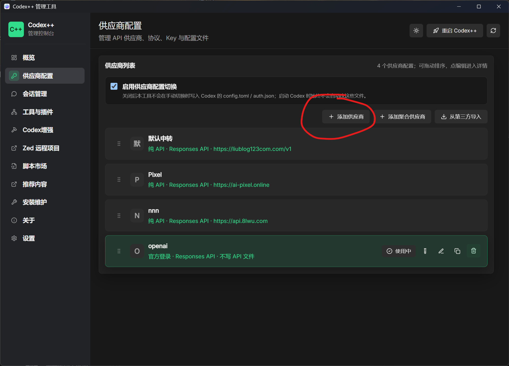
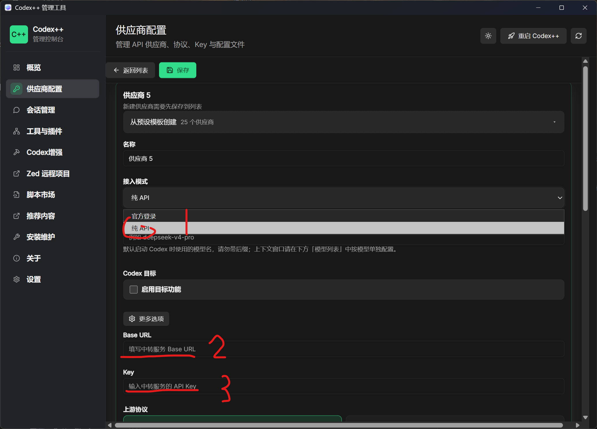

用 Codex++ 接入第三方中转站 API
官方 API 价格不菲且国内访问不稳。Codex++ 的中转注入模式，让我们在保留 ChatGPT 登录态的同时把模型请求转到自定义兼容 API，是国内环境下最顺的接法[10]。
先理解一个关键概念：Responses API
Codex 用的是 OpenAI 的 Responses API（/v1/responses），不是常见的 Chat Completions（/v1/chat/completions）。所以你的中转站必须支持 Responses API 兼容，或提供协议转换[4]。
| 客户端 | 所用接口 |
|---|---|
| 普通聊天客户端 | /v1/chat/completions |
| Codex | /v1/responses |
看到中转站写"兼容 OpenAI"不代表支持 Codex——开始配置前先确认它明确支持 /v1/responses[5]。
第一步：在中转站后台拿到 API Key
- 登录中转站后台，创建一个 API Key。
- 建议按工具/项目分别命名（如
codex-lab、codex-paper），方便分别查消耗、单独吊销，不要让所有工具共用一个 Key[5]。 - 记下中转站的 Base URL（形如
https://xxx.com/v1）和后台显示的模型 ID。
第二步：在 Codex++ 管理工具里配置中转
打开 Codex++ 管理工具（Tauri 控制面板），中转注入会写入一个名为 CodexPlusPlus 的 Provider，并支持多个中转配置，随时可切回官方 ChatGPT 登录态[10]。

- 添加供应商：在管理工具的"中转注入"区域，新建一个中转配置。
- 填写信息：Base URL（带
/v1）、API Key、模型 ID。Codex++ 会自动生成model_catalog_json并注入config.toml，切换模型即生效[10]。 - 保存并启用：保存中转设置，然后通过 Codex++ 启动器重启 Codex（不是直接重启 Codex App）。

Base URL 带 /v1，但不要带 /responses。Codex 会自动拼接接口路径，写全了会变成 /v1/responses/responses[5]。正确写法只到 /v1。
第三步：验证连接
从 Codex++ 启动 Codex，进入项目后先输入 /status。它应该显示当前 Provider、模型和认证状态。如果仍然显示官方 Provider，通常说明没有从 Codex++ 启动，或保存后没有重启。
再让 Codex 做一个只读测试：“请分析当前项目结构，不要修改任何文件。”如果能正常回答，说明中转配置基本通了。
如果连不上，优先检查三件事：Base URL 是否只写到 /v1、中转站是否支持 Responses API、API Key 是否复制完整。返回 404 往往就是接口路径或协议不匹配[5]。
Codex++ 还顺手解决了什么
除了中转注入，装上 Codex++ 还有几个对组里实用的增强[10]：
解锁插件与 Skills
API Key 模式下 Codex 原生会提示需登录 ChatGPT，Codex++ 启动后解锁插件市场，能装第 04 章的实用 Skills。
会话删除与导出
原生只有归档，Codex++ 在会话列表悬停时显示删除按钮，还支持 Markdown 导出，方便留档实验过程。
纯文本粘贴
从 Word/Excel 粘贴到 Codex 时只保留纯文本，避免被识别成图片附件（默认关闭，需在管理工具勾选后重启生效）。
按模型配置长度
可给每个模型单独填上下文窗口（如 1M、200K），Codex++ 自动注入 config.toml。
中转注入是混合模式：官方 ChatGPT 登录态继续负责 App 的账号能力和插件入口，模型请求转到中转站[10]。也就是说——插件能用、模型走中转、随时可切回官方，三不误。
详细报错排查见第 08 章。下一章讲怎么找和安装实用 Skills。